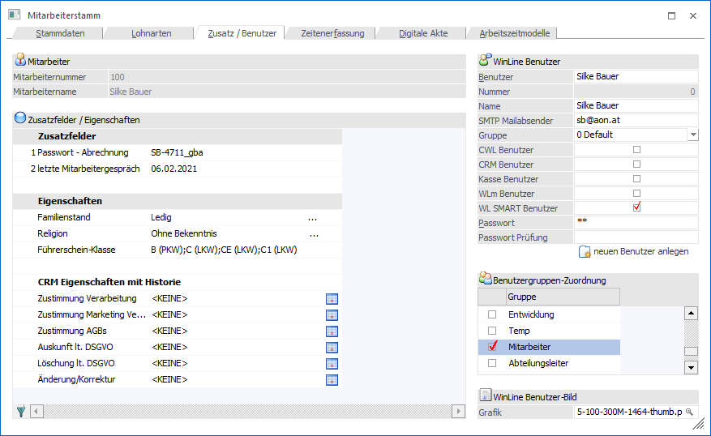
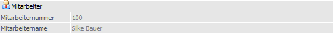
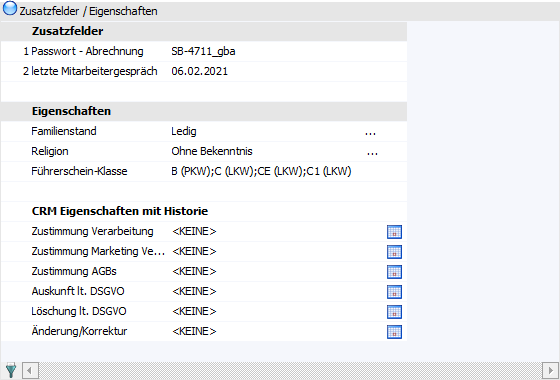
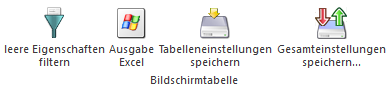
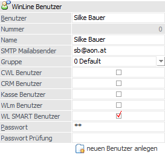
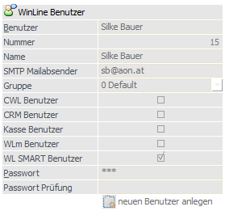
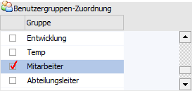
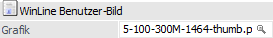

In dem Register "Zusatz / Benutzer" können die Zusatzfelder und Eigenschaften inklusive CRM Historien Eigenschaften hinterlegt werden. Zusätzlich ist es möglich für den Mitarbeiter einen WinLine Benutzer anzulegen und gleichzeitig zuzuordnen, ohne in WinLine ADMIN wechseln zu müssen.
Hinweis
Die Definition der Zusatzfelder und Eigenschaften findet jeweils in der WinLine START ("Optionen - Zusatzfelder…" bzw. "Optionen - Eigenschaften") statt.

Folgende Eingabefelder, Einstellungen und Informationen stehen zur Verfügung:
Mitarbeiter

Ø Mitarbeiternummer / Mitarbeitername
Im oberen Teil des Fensters werden Daten des Mitarbeiters, welche gerade bearbeitet wird angezeigt.
Tabelle "Zusatzfelder / Eigenschaften"

In der Tabelle können die Zusatzfelder und Eigenschaften befüllt werden.
Tabellenbuttons

Ø leere Eigenschaften filtern
Über diesen Button können leere Eigenschaften ausgeblendet werden.
Ø Ausgabe Excel
Durch Anwahl des Buttons "Ausgabe Excel" wird der Inhalt der aktuellen Tabelle an Microsoft Excel übergeben.
Ø Tabelleneinstellungen speichern
Die Spalten einer Tabelle können grundsätzlich an beliebige Positionen verschoben, bzw. in der Breite entsprechend angepasst werden. Durch Anwahl des Buttons "Tabelleneinstellungen speichern" werden die Einstellungen benutzerspezifisch gespeichert und bei dem nächsten Aufruf des Programmpunktes wieder vorgeschlagen.
Ø Gesamteinstellungen speichern
Im Gegensatz zu "Tabelleneinstellungen speichern" können mit "Gesamteinstellungen speichern" mehrere Tabellenaufbauten gespeichert und nach Wunsch geladen werden. Zusätzlich werden Sonderfunktionen der Tabelle (z.B. "Spalte gruppieren") ebenfalls bei der Speicherung bedacht.
WinLine Benutzer

Achtung
Wenn die Felder im Bereich WinLine Benutzer nicht bearbeitbar sind, dann wurde der Mitarbeiter / Arbeitnehmer bereits mit einem Benutzer "gekoppelt".

In solch einem Fall können die Benutzereinstellungen nur mehr im WinLine ADMIN bearbeitet werden.
Ø Benutzer
Eingabe des Benutzernamens (Login), max. 20stellig, alphanumerisch. Ist noch keine Benutzer für den Mitarbeiter angelegt, wird hier der Name vorgeschlagen, der noch editiert werden kann.
Ø Nummer
Die interne Benutzernummer wird vom Programm automatisch vergeben, sobald der neue Benutzer gespeichert wird und kann nicht geändert werden. Ist noch kein Benutzer angelegt, wird 0 angezeigt.
Ø Name
Hier kann der komplette Benutzername eingegeben werden. Ist noch kein Benutzer für den Mitarbeiter angelegt, wird hier der Name vorgeschlagen.
Ø SMTP Mailabsender
Wenn in den E-Maileinstellungen (WinLine Start - Parameter - Einstellungen - Register "Mail") eingestellt ist, dass ein SMTP-Mail-Client verwendet werden soll, dann muss in diesem Feld die E-Mail-Adresse des Benutzers eingetragen werden, mit der dann die Mails aus der WinLine versendet werden sollen. D.h. der Absender wird dann aus den Informationen "Name" und "SMTP Mailabsender" zusammengesetzt.
Hinweis
Der Report aus dem Modul WinLine SMART TIME wird entsprechend an diese E-Mail-Adresse verschickt.
Ø Gruppe
Aus der Auswahlliste muss eine "System-Benutzergruppe" ausgewählt werden, in welcher der Benutzer angelegt werden soll.
Ø CWL Benutzer / CRM Benutzer / Kasse Benutzer / WLm Benutzer / WL SMART Benutzer
Über die nachfolgenden Optionen kann gewählt werden, welche Funktionen der Benutzer ausführen darf. Dabei gibt es folgende Möglichkeiten, die auch kombiniert werden können:
ü CWL Benutzer
Der Benutzer kann
gemäß der vorhandenen Lizenz und der restlichen Einstellungen mit der WinLine
arbeiten.
ü CRM Benutzer
Der Benutzer kann
den Programmbereich des CRM innerhalb der WinLine benutzen.
ü Kasse Benutzer
Wird dieses
Checkbox aktiviert, so können die Funktionen der WinLine KASSE genutzt
werden.
ü WLm Benutzer
Wenn diese
Checkbox aktiviert wird, dann kann der Benutzer auch die WinLine mobile
aufrufen. Die Aktivierung ist allerdings nur dann möglich, wenn auch ein WinLine
Server installiert wurde bzw. ist dafür eine entsprechende Lizenz notwendig.
ü WL SMART Benutzer
Mit dieser
gesetzten Checkbox steht dem Benutzer über die WinLine mobile das SMART Cockpit
zur Verfügung, das alle Funktionen beinhaltet, die dem WinLine SMART Benutzer
zur Verfügung stehen.
Ø Passwort
An dieser Stelle wird das max. 15stellige Passwort des Benutzers hinterlegt, wobei bei der Eingabe nur Platzhalter (*) angezeigt werden. Nach Bestätigen der Eingabe muss das Passwort durch eine zweite Abfrage bestätigt werden, um Tippfehler auszuschließen.
Ø Passwort Prüfung
Bestätigung des zuvor eingetragenen Passwortes.
Ø neuen Benutzer anlegen
Mit dem Button "neuen Benutzer anlegen" wird der Benutzer mit den eingetragenen Informationen angelegt.
Tabelle "Benutzergruppen-Zuordnung"

Jene Benutzergruppen werden in einer Tabelle angezeigt, welche der Mitarbeiter bzw. WinLine Benutzer zugeordnet ist. Bei der Anlage des Benutzers können hier alle notwendigen Personengruppenzuordnungen getroffen werden.
WinLine Benutzer-Bild

Ø Grafik
An dieser Stelle wird der Dateiname des Bilds vom Mitarbeiters bzw. Bewerbers dargestellt.